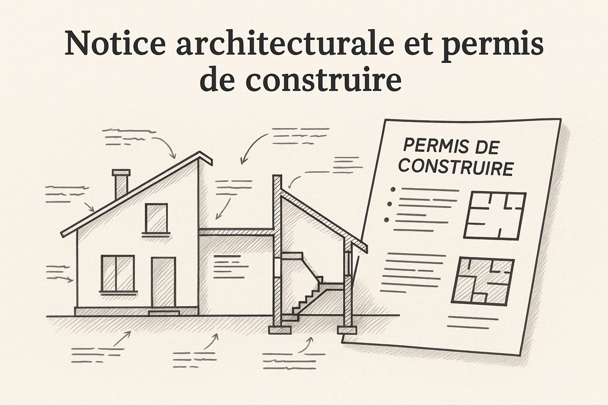

Site de la classe · 2026-2027
Terminale TEB-AA
Bac Pro Technicien d'études du bâtiment · option B Assistant en architecture
Consignes, séances, fiches à remplir et ressources : tout le travail de la classe est ici. Les fichiers lourds (plans, CCTP, maquettes) sont sur le Drive, accessibles depuis chaque séance.

01
Projets
 En cours
PROJET 01 · MDQB
Maison de quartier Bagatelle
Compléter la maquette clos-couvert d'un ERP avec le second œuvre, puis produire les plans du dossier PRO.
En cours
PROJET 01 · MDQB
Maison de quartier Bagatelle
Compléter la maquette clos-couvert d'un ERP avec le second œuvre, puis produire les plans du dossier PRO.
0 / 5 séances
Ouvrir le projet →

En attente PROJET 02 · VILLA Villa DUPONT, Quillan Dossier de permis de construire d'une maison individuelle, en trois pôles.Démarrage après Noël
Ouvrir le projet →
02
Agenda U22
La prochaine séance est signalée, les séances passées sont atténuées.
- S1Ven. 13/11 · 4 hDécouvrir le projet : quoi modéliser, et où ?MDQB · TD 01Prochaine
- S2Ven. 20/11 · 3 hPréparer la maquette : fond de plan et types de paroisMDQB · TP 01Prochaine
- S3Ven. 27/11 · 4 hCloisonnement et menuiseries intérieuresMDQB · TP 02Prochaine
- S4Ven. 11/12 · 4 hSols, faux plafonds, pièces et surfacesMDQB · TP 03Prochaine
- S5Ven. 18/12 · 3 hRendu du dossier PROMDQB · ÉvaluationProchaine
03
Règles de travail
- Un dossier par projet, organisé comme indiqué sur la page du projet.
- Vos réponses saisies dans les pages restent sur le poste : imprimez en PDF ou téléchargez avant de partir.
- Les livrables se déposent sur le Drive, au nom convenu, à la fin de chaque séance.
04
Épreuve E22
- Production de documents graphiques · 6 h sur poste · coefficient 3.
- Compétences évaluées : C2.3 et C3.4.
- Toujours demandé : maquette .ifc + format natif, plans mis en page, détail à main levée.